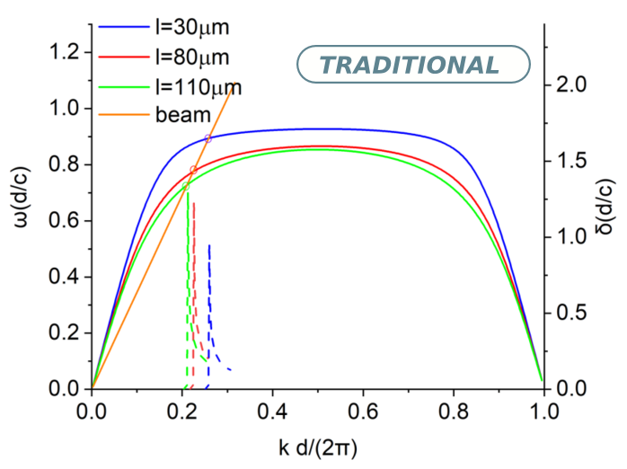

Palestras
• Theory of terahertz Smith-Purcell radiation from a cylindrical grating. (2019)
• Horário - 8h às 12h
• An analysis of an annular electron beam propagating along a cylindrical grating withexternal magnetic fieldB0is presented. The grating comprises a dielectric in its slots. Thedispersion relation of the modes is derived. The results demonstrate that the dielectricshifts the frequencies of the system modes to smaller values. The growth rates of themodes which are in phase with the beam are also considered. It is found that the declinein the growth rate is brought about by the dielectric. In addition, increasing the thicknessof the dielectric and decreasing the height of the slots cause it to rise. The effect of beamthickness on growth rate is considered too. This is shown to increase and then fall asbeam thickness increases. These results show that utilizing cylindrical grating loaded withdielectric has a promising effect on developing new kinds of compact high-efficient THzfree-electron lasers based on Smith–Purcell radiation..